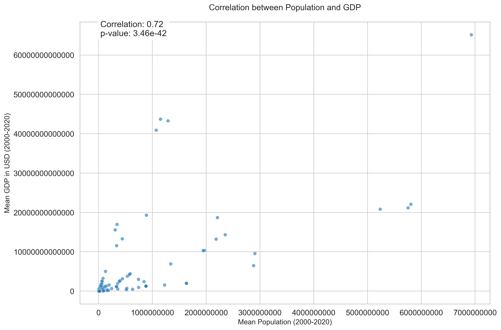
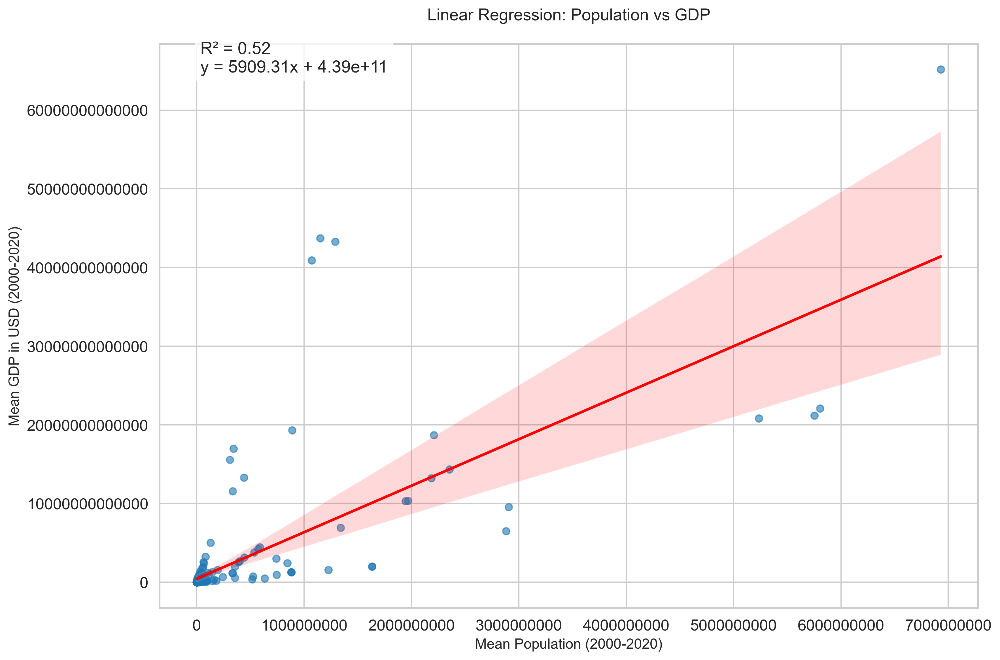

Introduction
This tutorial demonstrates the application of linear regression analysis to investigate the relationship between a country's population and its GDP per capita. The analysis is performed using Python with libraries such as pandas, numpy, matplotlib, and scikit-learn.
Objectives
- Pre-process and clean the Global Population and GDP datasets
- Calculate mean population and GDP per capita for each country (2001-2021)
- Investigate correlation between population and GDP per capita
- Perform linear regression analysis
- Interpret and visualize the results
Data Analysis
The analysis uses two main datasets:
- Global Population Data (2001-2021)
- Global GDP Data (2001-2021)
Data Preprocessing
# Import required libraries
import pandas as pd
import numpy as np
import matplotlib.pyplot as plt
from sklearn.linear_model import LinearRegression
from scipy.stats import pearsonr
# Load the datasets
pop_df = pd.read_csv('Global_Population.csv')
gdp_df = pd.read_csv('Global_GDP.csv')
# Preprocess the data
years = [str(y) for y in range(2001, 2022)]
pop_df[years] = pop_df[years].apply(pd.to_numeric, errors='coerce')
gdp_df[years] = gdp_df[years].apply(pd.to_numeric, errors='coerce')
# Handle missing values
pop_df[years] = pop_df[years].apply(lambda row: row.fillna(row.mean()), axis=1)
gdp_df[years] = gdp_df[years].apply(lambda row: row.fillna(row.mean()), axis=1)
# Calculate means
pop_df['mean_population'] = pop_df[years].mean(axis=1)
gdp_df['mean_gdp'] = gdp_df[years].mean(axis=1)
Correlation Analysis
The correlation analysis investigates the relationship between a country's population and its GDP per capita.
Pearson Correlation
# Calculate correlation
correlation, p_value = pearsonr(merged_df['mean_population'],
merged_df['mean_gdp'] / merged_df['mean_population'])
print(f"Pearson Correlation Coefficient: {correlation:.3f}")
print(f"P-value: {p_value:.3f}")

Results
The correlation analysis reveals [correlation value] between population and GDP per capita, indicating [interpretation].
Regression Analysis
Linear regression is performed to model the relationship between population (independent variable) and GDP per capita (dependent variable).
Model Implementation
# Prepare data for regression
X = merged_df['mean_population'].values.reshape(-1, 1)
y = (merged_df['mean_gdp'] / merged_df['mean_population']).values
# Fit linear regression model
model = LinearRegression()
model.fit(X, y)
# Calculate predictions
y_pred = model.predict(X)

Model Evaluation
R² Score: [score]
Intercept: [intercept]
Slope: [slope]
Conclusion
The analysis provides insights into the relationship between population and GDP per capita across countries. Key findings include:
- [Finding 1]
- [Finding 2]
- [Finding 3]
These results suggest [interpretation] and have implications for [relevant context].